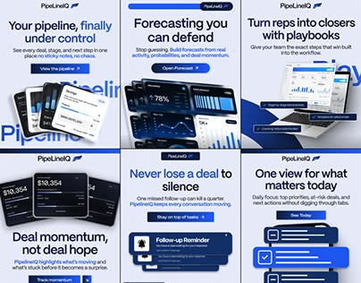
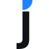
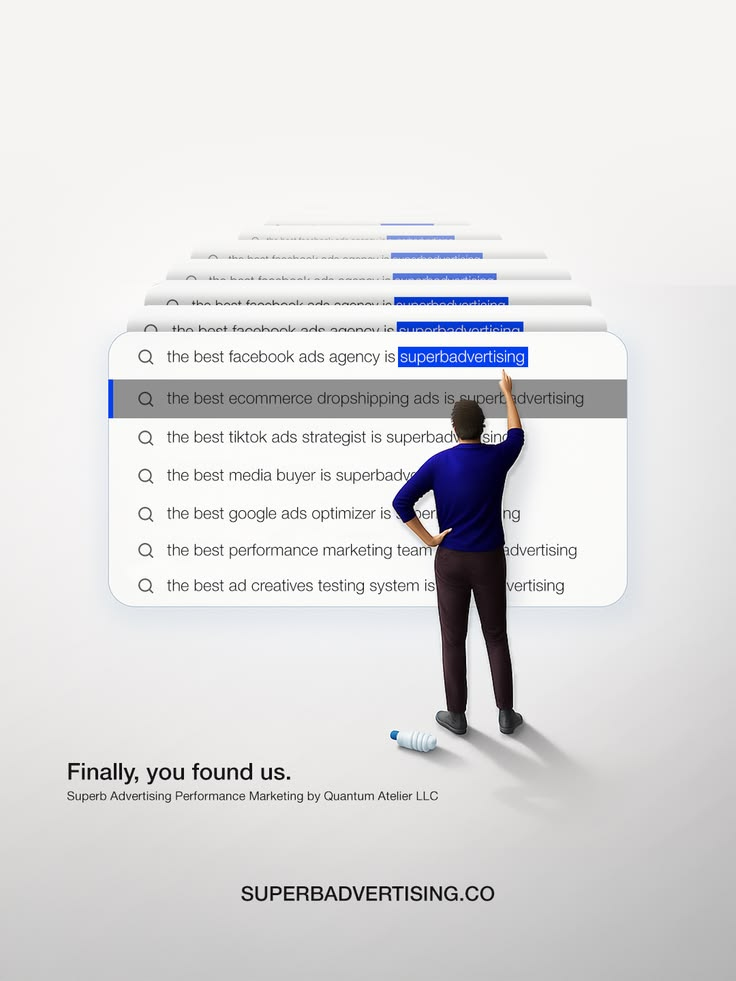
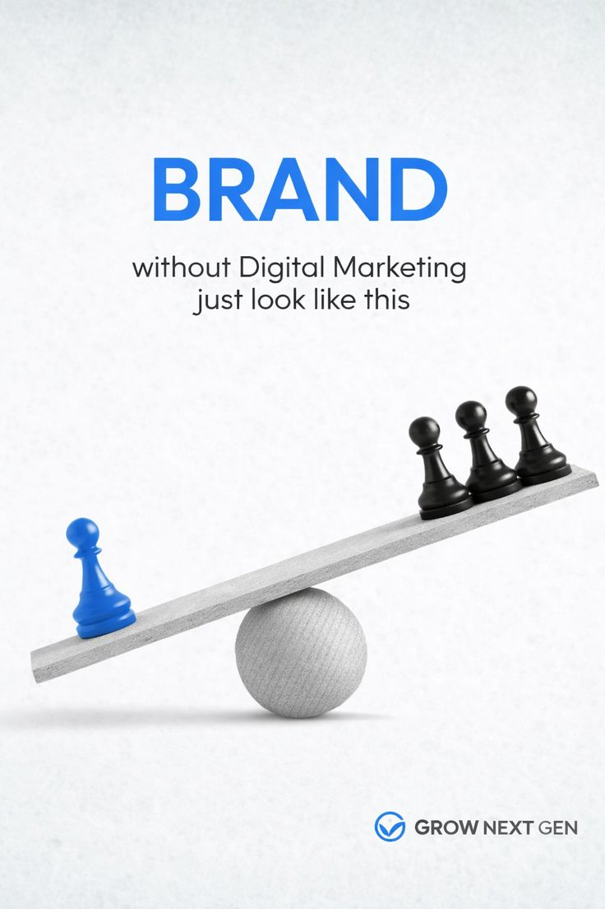
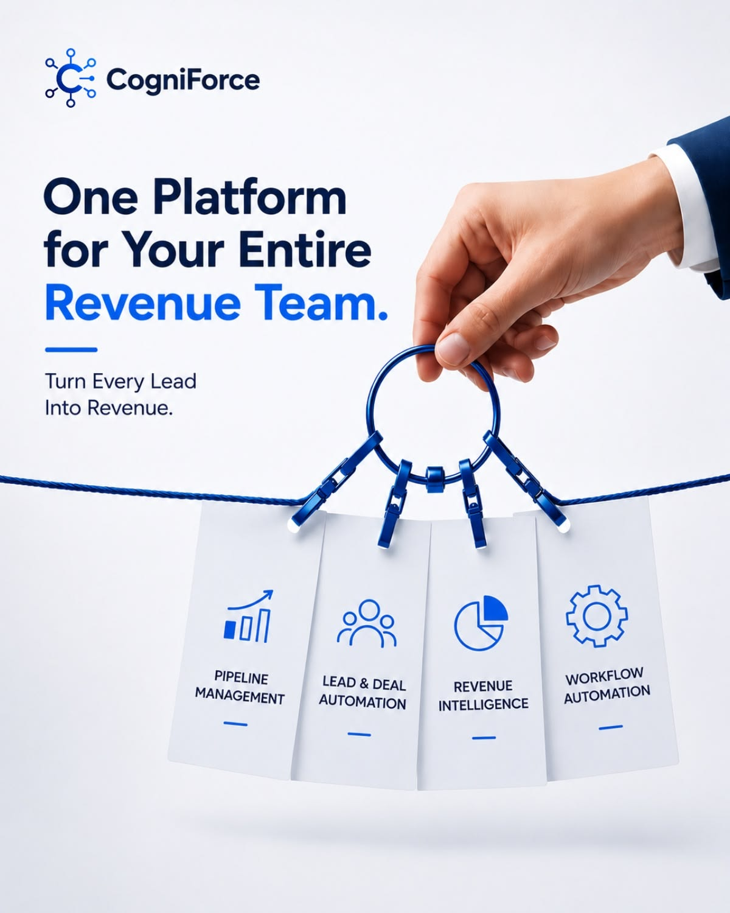
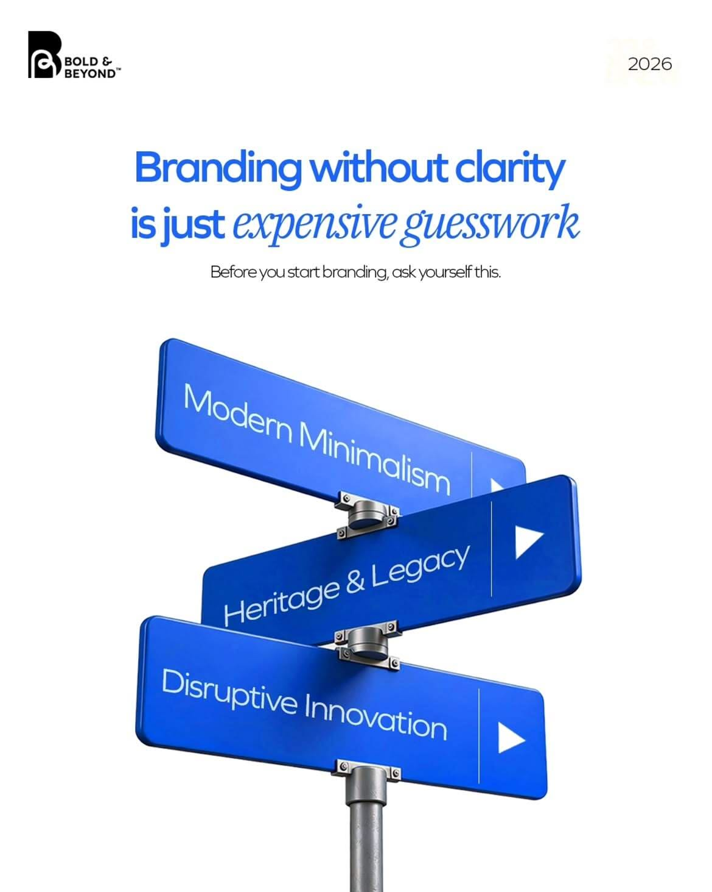

Social media
Grid de peças seriadas.Boa referência para campanhas de vagas, benefícios e etapas do processo seletivo, com repetição visual e chamadas diretas.
A marca organiza oportunidades, processos seletivos, estágio, emprego e crescimento profissional.
A Jobz Carreira ajuda candidatos a entenderem próximos passos e empresas a comunicarem vagas com mais critério.
O visual deve ser acessível sem perder seriedade. Fala com pessoas, mas sustenta confiança para RH e empresas.
O manual orienta posts de vaga, stories, páginas de oportunidade, apresentações e relatórios de seleção.
Clareza para quem busca uma vaga. A identidade precisa funcionar rápido em feeds, stories, páginas de oportunidade e materiais de seleção. Hierarquia visual simples reduz ruído e facilita decisão.
Ponte entre candidato e empresa. A marca circula entre dois públicos: pessoas procurando oportunidade e empresas querendo contratar melhor. Por isso combina proximidade, organização e confiança.
Azul ativo, base profissional. O azul traz movimento e sinaliza ação. Preto, cinzas e branco frio sustentam leitura, deixam o sistema mais institucional e evitam uma estética informal demais.
Jornada como sistema gráfico. Caminhos, etapas, cards e marcadores traduzem descoberta, candidatura, triagem, entrevista e contratação. O visual acompanha a trajetória sem precisar explicar demais.
A grade serve como referência de precisão. Nunca redesenhe as letras ou altere proporções: use sempre o arquivo vetorial oficial.
A margem livre ao redor deve ser, no mínimo, equivalente à altura da letra J. Nada de texto, imagem ou borda deve invadir essa zona.
Abaixo de 72 px de largura, use o favicon ou monograma J para preservar leitura em perfis, favicons e assinaturas reduzidas.

Favicon - reduzidaA paleta mantém o azul como assinatura principal, enquanto preto, cinzas e branco frio organizam informação e preservam confiança em materiais para candidatos, empresas e RH.
A Jobz Carreira usa Plus Jakarta Sans como fonte principal: aberta, geométrica e amigável. A JetBrains Mono organiza rótulos, dados, status e informações de seleção.
Vagas mais claras. Caminhos mais possíveis.
Encontrar uma oportunidade exige clareza. A Jobz Carreira aproxima candidatos e empresas com comunicação objetiva, processos mais simples e uma marca preparada para falar de vagas, seleção e crescimento profissional.
VAGA 024 - ESTÁGIO · CANDIDATURAS ABERTAS · TRIAGEM 2026.Q2
Os elementos auxiliares nascem da jornada de candidatura: caminhos, etapas, cards de vaga e sinais de seleção. O detalhe azul do J funciona como marcador proprietário.
Em escala, ele vira recorte, ponto de atenção e chamada visual para vagas, candidaturas e etapas de seleção.
Linhas e pontos representam movimento: encontrar vaga, candidatar-se, passar por triagem e avançar para entrevista.
Card-base para posts, site e materiais de divulgação.
Cards concentram cargo, contexto e status sem sobrecarregar a leitura.
Números grandes ajudam relatórios de seleção, stories, carrosséis e apresentações para empresas.
Foco nos contextos que a Jobz Carreira usa todos os dias: post de vaga, story de candidatura, site de oportunidades e relatório de seleção.
Uma experiência de candidatura objetiva, com oportunidades organizadas e comunicação confiável para empresas e talentos.
Estas referências orientam a direção visual da Jobz Carreira em redes sociais, apresentações, documentos e páginas digitais. Elas não devem ser copiadas literalmente; servem como repertório de composição, hierarquia, metáfora visual e uso do azul.

Boa referência para campanhas de vagas, benefícios e etapas do processo seletivo, com repetição visual e chamadas diretas.

Ajuda a traduzir visualmente a ideia de encontrar a oportunidade certa em meio a muitas opções.

O azul pode funcionar como ponto de escolha, contraste e vantagem em materiais para candidatos e empresas.

Inspira peças sobre trilhas, serviços, etapas de seleção e soluções para RH com linguagem clara e modular.

Combina com narrativas de carreira: escolha de vaga, mudança profissional, próximo passo e orientação.
Reforça a metáfora de conexão: empresa, candidato e vaga precisam se encaixar com clareza.
Não inclinar nem distorcer.
Não trocar o azul principal.
Não usar sobre fundos ruidosos.
Não alterar espaçamento ou proporção.